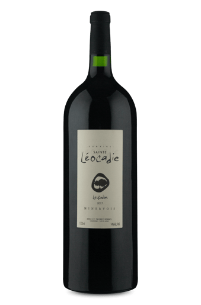
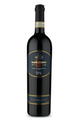

LOJA DE BEBIDAS
VINHOS IMPORTADOS
DOMAINE SAINTE LÉOCADIE
Fundada em 2002, a vinícola fica sob a Apelação de Origem de Minervois. Este exemplar tem uma grande complexidade aromática que une aromas mediterrâneos e de frutas negras com sutis notas de menta. Em boca é uma bela concentração de especiarias e notas de frutas em compota, taninos sedosos e um longo final.
BENI DE BASTASIOLO
Esse nobre tinto integra uma das mais aclamadas denominações da Itália, a Barbaresco. Localizada no Piemonte, essa D.O.C.G. tem como estrela a uva Nebbiolo, que nesse rótulo amadurece em diferentes barricas de carvalho, aumentando a complexidade aromática e gustativa do vinho.
LA MATEO GARNACHA

La Mateo Garnacha de Altura refere-se à linha dos vinhos mais pessoais da família com uma casta muito valorizada na adega. Uma seleção de vinhedos das áreas mais altas. A Bodegas d. Mateos é uma vinícola familiar que une as tradições vitivinícolas com inovações na área! Esse é um vinho feito em homenagem às gerações anteriores da família. Um Garnacha de paladar singular!